Build
- Place
- Canton, Massachusetts, on about 11 acres of woods and wetland beside a kettle pond
- Size
- 2,600 sq ft: a main house and a studio under one gable roof, joined by an open breezeway
- Form
- A house-shaped house: one gable, with a ridge over 100 ft long. Vincent Appel: “The clients affectionately refer to it as a house shaped house, which we love.”
- Architect
- Of Possible (Vincent Appel)
- Builder
- NS Builders (Nick Schiffer)
- Landscape
- Dialogue-Environment (Terry Fitzpatrick)
- Foundation
- Frost-protected shallow foundation; the polished structural slab is the finished floor
- Structure
- Panelized wood frame, 2x10 exterior walls at 16 in. on center
- Envelope
- Passive House-level: mineral wool inside and outside the sheathing, between two Pro Clima membranes, behind a vented cavity
- Cladding
- Half-sheet shingles of Roseburg marine-grade plywood, coated on all six sides in pine tar, on walls and roof alike
- Glass
- Andersen lift-slide units, 9 ft tall, across the first floor; Velux roof windows
- Air and heat
- ERV in the main house, Lunos in-wall HRV in the studio
- Built
- September 2024 to February 2026
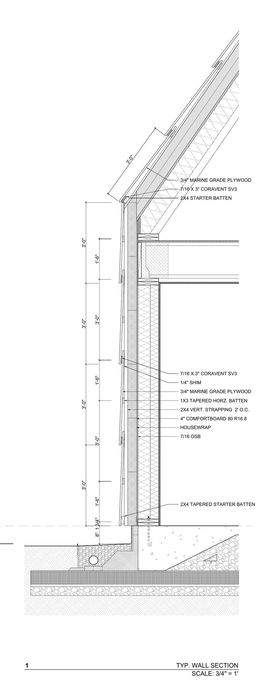
The layers of the exterior wall, listed from the interior finish to the shingle.
- Veneer plaster, over 1/2 in. blueboard, painted. It meets the floor at a 3/8 in. reveal, with no baseboard.
- Pro Clima Intello Plus, a smart vapor retarder, on the interior face of the frame.
- 2x10 framing at 16 in. on center, the 9.5 in. cavity filled with two layers of Rockwool ComfortBatt mineral wool.
- 1/2 in. sheathing.
- Pro Clima Adhero 3000, a self-adhered membrane, the water and air barrier.
- Rockwool ComfortBoard, a continuous layer of rigid mineral wool outside the sheathing, to reduce thermal bridging through the studs.
- Vertical strapping, pressure-treated lumber screwed at 16 in. through the board and into the framing. The spaces between the strips form a cavity that is open at the bottom and runs up the wall, over the roof, and out at a ridge vent.
- Horizontal strapping, pressure-treated lumber fixed across the verticals and cut on a bevel to set the angle of each shingle. Cor-A-Vent closes the lowest course.
- The shingle: marine-grade plywood, pine-tarred on all six sides, with an eighth-inch gap to its neighbors.
Mineral wool is the insulation in the stud cavity, outside the sheathing and under the slab. The interior membrane is a smart vapor retarder, and the exterior membrane is self-adhered to the sheathing.
Site
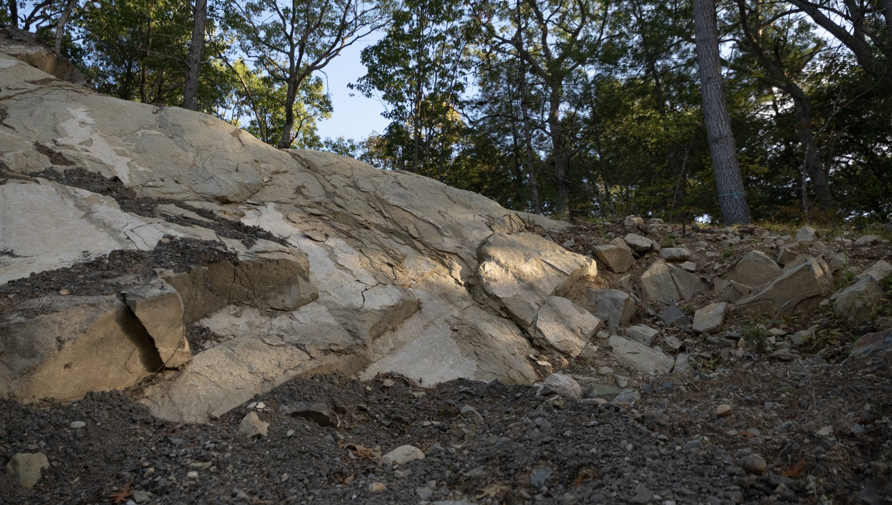
- Access road
- About 1,400 ft, gravel
- Earthwork
- About 3,000 cubic yards moved; ledge broken with explosives
- Water
- 6 in. ductile-iron line the length of the road, to a fire hydrant at the house
- Wastewater
- On-site septic
- Civil engineer
- Site Design Professionals (Paul Brodmerkle)
- Geotechnical
- S.W. Cole Engineering
- Sitework
- Michael S. Coffin LLC
The house is at the far end of the property, reached by a gravel road about 1,400 ft long. The road was built first. The road crosses a wetland on a culvert; the culvert design was revised during construction. Ledge along the route was broken with explosives.
A 6 in. ductile-iron water line runs under the road and ends at a fire hydrant beside the house. Wastewater goes to an on-site septic system.
 Watch · 11:02How We Built A Road Through The WoodsNS Builders
Watch · 11:02How We Built A Road Through The WoodsNS Builders

Foundation
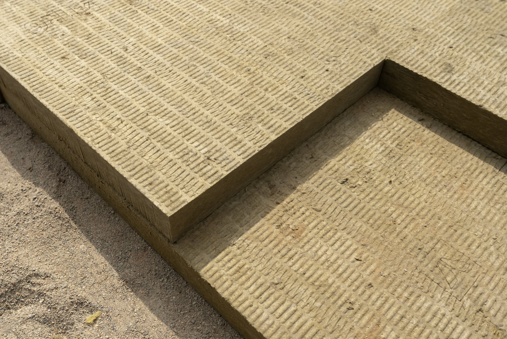
- Type
- Frost-protected shallow foundation: a slab on grade, with no frost wall
- Formwork
- MonoSlab foam forms, left in place as edge insulation
- Under the slab
- 6 in. of Rockwool ComfortBoard 110; high-density foam under the footings
- Beyond the slab
- Insulation runs out horizontally about 4 ft past the edge
- Vapor barrier
- Stego, 15 mil
- Layout tolerance
- 1/4 in. corner to corner, set for the lift-slide units, on a house a little over 100 ft long
- Finish
- The structural slab, polished to a salt-and-pepper exposure, is the finished floor
- At the edge
- Cement board and a parge coat over the exposed foam
The foundation is a frost-protected shallow foundation: a slab on grade with no frost wall. Instead of a wall carried below the frost line, the foundation is insulated horizontally: insulation runs under the slab and about 4 ft out past its edge. The foam forms stay in place after the pour and serve as edge insulation.
The structural slab is the finished floor on the first level. NS Builders set the layout tolerance at 1/4 in. corner to corner over a length of a little more than 100 ft, to suit the lift-slide units, and polished the slab to a salt-and-pepper exposure. The slab is recessed under each lift-slide unit so the threshold is flush. There is no radiant heat in the slab.
 Watch · 5:27Frost Protected Slab ExplainedNS Builders
Watch · 5:27Frost Protected Slab ExplainedNS Builders

Frame
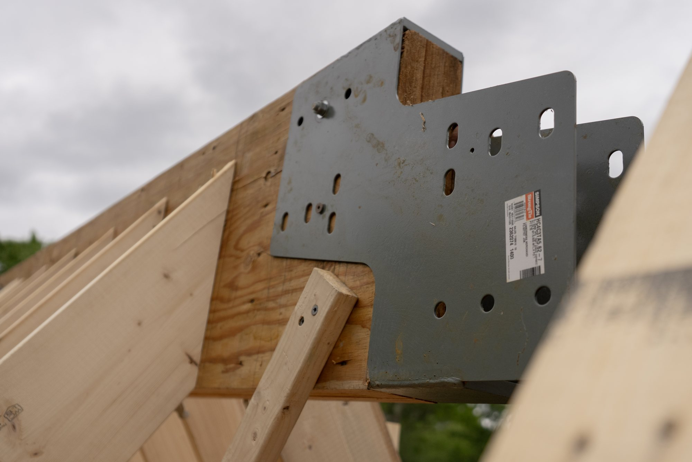
- System
- Semi-prefabricated wood frame, pre-cut and panelized by Cape Cod Panel
- Exterior walls
- 2x10 at 16 in. on center
- Sheathing
- 1/2 in.
- Structural engineer
- H+O Structural Engineering
Cape Cod Panel pre-cut and panelized the wood frame off site, and the panels were erected on the slab. The building is a single gable a little over 100 ft long. An open breezeway passes through it, and the second floor bridges over the breezeway. Exterior walls are 2x10 studs at 16 in. on center.
Envelope
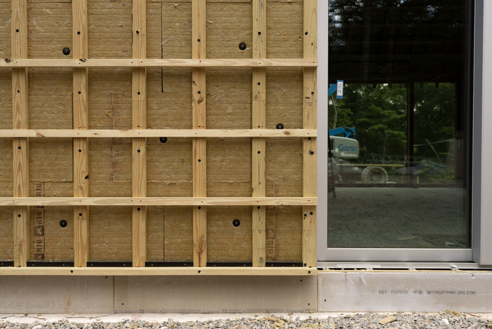
- Performance
- Passive House-level envelope
- Interior membrane
- Pro Clima Intello Plus, seams taped
- Cavity insulation
- Two layers of Rockwool ComfortBatt, 9.5 in.
- Exterior membrane
- Pro Clima Adhero 3000, self-adhered
- Exterior insulation
- Rockwool ComfortBoard, continuous over walls and roof
- Rainscreen
- Pressure-treated strapping, vertical then horizontal, fastened at 16 in.; cavity vented at the base and at the ridge
Rockwool ComfortBoard runs continuously over the sheathing on the walls and the roof. Two layers of ComfortBatt fill the stud cavity. Pro Clima Intello Plus is on the inside of the frame with taped seams, and Pro Clima Adhero 3000 is adhered to the outside of the sheathing.
Two layers of pressure-treated strapping, vertical strips fastened into the framing and beveled horizontal strips over them, hold the shingles off the insulation. The cavity behind the shingles is open at the base of the wall and at the ridge, so air moves through it.
 Watch · 13:56Why Exterior Insulation Is The Key To Your Home’s FutureNS Builders
Watch · 13:56Why Exterior Insulation Is The Key To Your Home’s FutureNS Builders

Megashingle
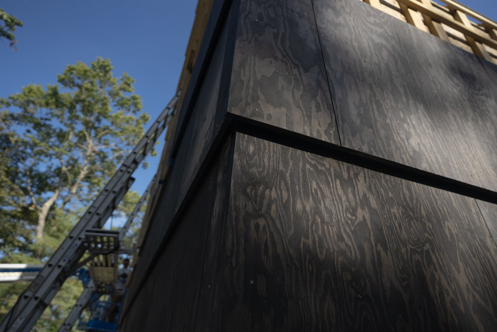
- Name
- The megashingle (also written mega-shingle or mega shingle)
- Material
- Roseburg marine-grade plywood, each shingle half of a 4x8 sheet
- Finish
- Pine tar mix by Sage Restoration, on all six sides
- Joints
- 1/8 in. gap, held along walls about 100 ft long
- Corners
- Not woven: the long walls lap the short walls
- Roof
- The same shingle as the walls
- Gutters
- One, over the breezeway
Of Possible and NS Builders call the cladding the megashingle: an oversized shingle, each one half of a 4x8 sheet of Roseburg marine-grade plywood. Vincent Appel on the size: “the mega shingle, which is just a four by eight sheet of plywood cut in half, creates this oversized version of a familiar shingle.” The same megashingle covers the walls and the roof. Every shingle is coated on all six sides with a pine tar mix from Sage Restoration.
Vincent Appel on the orientation of the panels: “We didn’t want end grain facing the sky.” NS Builders cut and squared every panel before hanging it and re-coated the cut edges with pine tar. The joints are 1/8 in., held along walls about 100 ft long.
 Watch · 19:18One Shingle to Rule Them All!NS Builders
Watch · 19:18One Shingle to Rule Them All!NS Builders
Glass
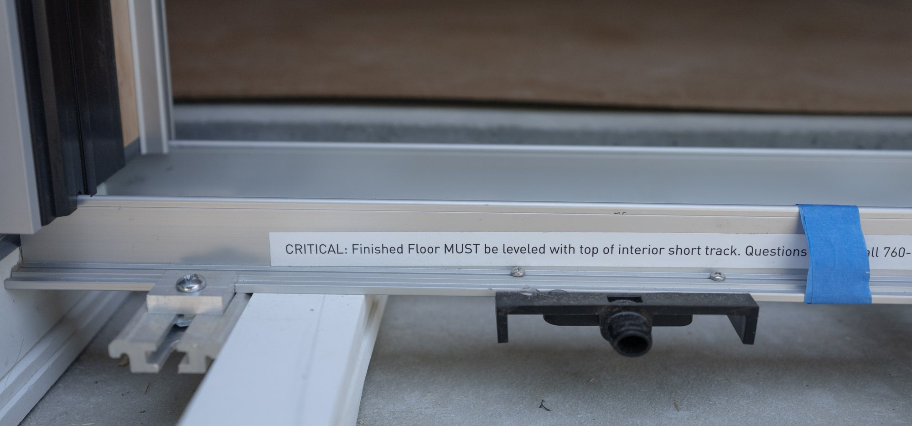
- First floor
- Andersen lift-slide units, 9 ft tall, floor to ceiling
- Exterior finish
- Aluminum, sandblasted and then clear anodized
- Interior finish
- Douglas fir, clear coated
- Threshold
- Flush: the slab is recessed under each unit
- Screens
- Fixed
- Roof
- Velux roof windows and a Velux skylight
The first floor has Andersen lift-slide units, 9 ft tall, running from floor to ceiling. They are used as large operable windows, and the screens are fixed. An operable screen would need a third track and a deeper unit.
The exterior aluminum is sandblasted and then clear anodized. The interior is Douglas fir with a clear coat. Each unit sits in a recess in the slab, so the floor meets the glass with no step. The roof has Velux roof windows and a Velux skylight.
 Watch · 13:16Installing Floor to Ceiling Sliding Glass in Modern Nordic CabinNS Builders
Watch · 13:16Installing Floor to Ceiling Sliding Glass in Modern Nordic CabinNS Builders


Interior
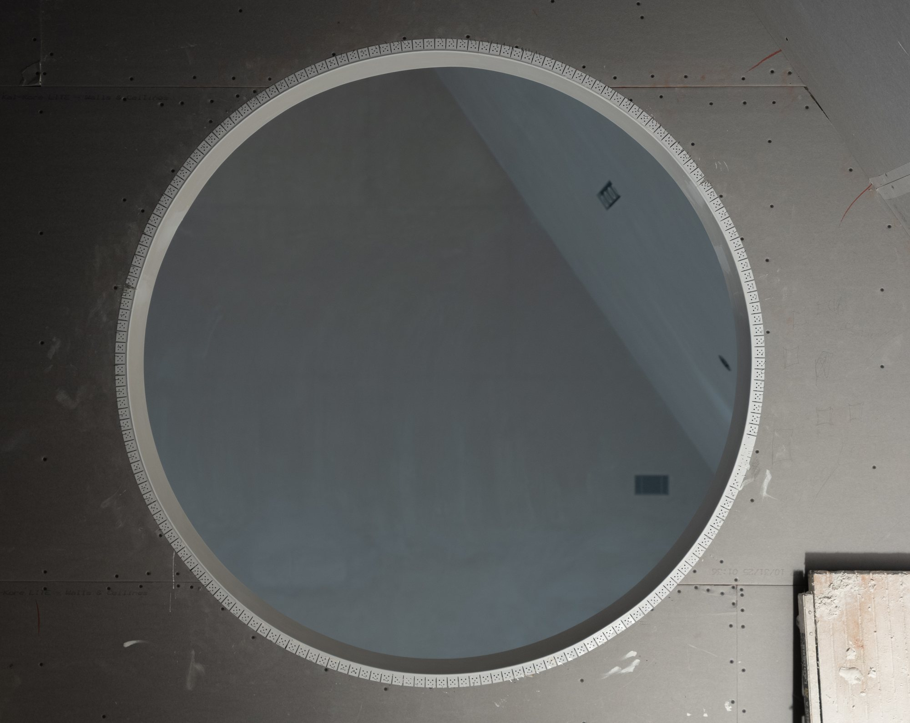
- Walls and ceilings
- Veneer plaster over blueboard, painted matte
- At the floor
- 3/8 in. reveal, no baseboard
- Doors
- Ceiling height, no head casing, frames plastered in; pocket-door tracks buried in the ceiling
- Millwork
- White oak, by Materia Millwork, NS Builders' own shop
- Counters
- Vermont Danby marble, fabricated by Boston Counters
- Floors
- Polished concrete on the first floor
- Closets
- No doors: curtains on ceiling tracks, in the same cloth as the window curtains
- Powder room
- Benjamin Moore Black Horizon, matte
- Entry steps
- Reclaimed granite, from New England Reclaimed Granite in Groton, Massachusetts
Walls and ceilings are veneer plaster over blueboard, painted matte. There is no baseboard; the wall stops at a 3/8 in. reveal above the floor. Doors are ceiling height with no head casing, and their frames are plastered in. Pocket-door tracks are buried in the ceiling. A circular opening on the second floor looks down into the living room.
Millwork is white oak, made by Materia Millwork. Counters are Danby marble, quarried in Vermont and fabricated by Boston Counters. The first floor is the polished concrete slab.
The entry steps are reclaimed granite. Vincent Appel selected the stones at the yard. The stone faces show feather-and-wedge marks from splitting.
The closets in the primary bedroom and along the upstairs hall have no doors and no built-in joinery. Curtains on ceiling tracks close them, in the same cloth as the window curtains.
 Watch · 10:24How This Home Connects Indoor Living with The OutdoorsNS Builders
Watch · 10:24How This Home Connects Indoor Living with The OutdoorsNS Builders

Furnishings
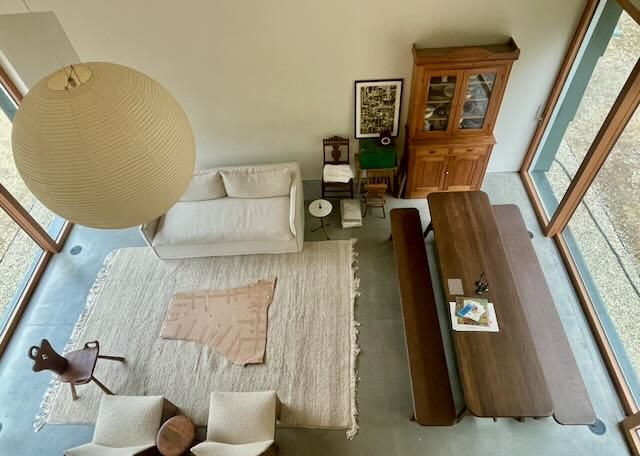
- Dining table and benches
- Landala table and two benches by Tre Sekel, Sweden. White oak, with a dutchman joint inlaid in blackened aluminum
- Coffee table
- Triple-burnt teak, by Andrianna Shamaris
- Sofa
- Dune, by Maiden Home
- Lounge chairs
- Tenon, by New Works
- Counter stools
- Low-back barstools by Edward Collinson, in smoked oak
- Lantern
- Akari, by Isamu Noguchi
- Bed
- Dansk bed frame by Earl Home. White oak, with the same inlaid joint as the dining table
- Rugs
- Nanimarquina in the primary bedroom and bath; custom rugs made from remnants by Costikyan
- Curtains
- Kravet cloth, made and installed by City View Blinds
- Upholstery
- Maharam, on the breakfast bench and the entry bench
- Entry bench
- White oak with four carved symbols, by Venture Works Build Design, Brooklyn
Most of the furniture was sourced through Of Possible. Vincent Appel’s plan places darker furniture in the dining and living room, at the middle of the floor plan, and lighter oak at each end: the kitchen millwork and the bedroom furniture.
The Tre Sekel dining table and the Earl Home bed are by different makers. Both are white oak with the same dutchman joint inlaid in blackened aluminum.
The coffee table is reclaimed teak. The wood is burned and sanded three times and then sealed, which produces a matte charcoal surface.
Systems
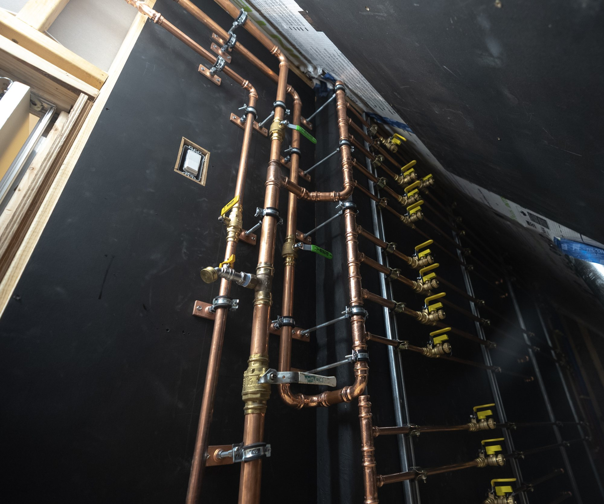
- Main house ventilation
- Energy recovery ventilator (ERV), ducted
- Studio ventilation
- Lunos in-wall heat recovery units, working in pairs
- Slab
- No radiant heat
- Electrical
- Span smart panel
The main house has a ducted energy recovery ventilator (ERV), which moves fresh air in and stale air out. The studio has no ductwork. It uses Lunos in-wall heat recovery units, which work in pairs. Electrical service runs through a Span smart panel. The roof penetrations are aligned in a row.
 Watch · 17:24The Hidden Craftsmanship on This Epic HouseNS Builders
Watch · 17:24The Hidden Craftsmanship on This Epic HouseNS Builders


{kind=link}
{kind=link}
{kind=link}
{kind=link}
{kind=link}
{kind=link}
{kind=link}
{kind=link}
{kind=link}
{kind=link}
{kind=link}
{kind=link}
{kind=link}
{kind=link}
{kind=link}
{kind=link}
{kind=link}
{kind=link}
{kind=link}
{kind=link}
{kind=link}
{kind=link}
{kind=link}
{kind=link}
{kind=link}
{kind=link}
{kind=link}
{kind=link}
{kind=link}
Landscape
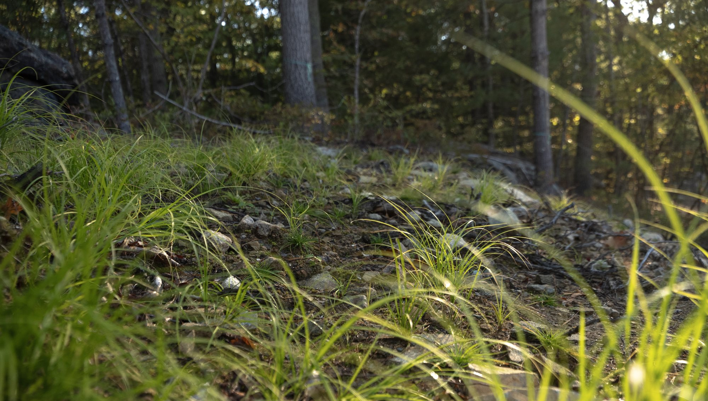
- Landscape architect
- Terry Fitzpatrick, Dialogue-Environment
- Seed
- Four custom native mixes from Ernst Conservation Seeds
- Roadside mix
- 27 PLS lb per acre, with annual ryegrass as a cover crop in the mix
- Steep-slope mix
- 55 PLS lb per acre, no cover crop
- Shade-to-wet mix
- 12 PLS lb per acre under a rye cover crop; sedges and rushes
- Showy meadow mix
- Butterfly milkweed, rattlesnake master, coneflowers, asters, sideoats grama
- Erosion control
- Jute mesh
- Installation
- Land Design Associates
The disturbed ground was seeded with four custom native mixes from Ernst Conservation Seeds, one for each condition: the road edge, the steep slopes, the sunny east meadow and the shaded wet ground. Land Design Associates did the installation.
The upland mixes include sideoats grama, bottlebrush grass and purple lovegrass, with milkweeds, coneflowers, oxeye sunflower and three asters. The wet mix includes lurid, blunt broom and fox sedge, soft rush, fowl mannagrass and northern bulrush, with golden alexanders. Several of the species are Pennsylvania and Rhode Island ecotypes. “PLS” means pure live seed: the rate counts only seed that will germinate.
{kind=link}
{kind=link}
{kind=link}
{kind=link}
Team
- Architect
- Of Possible
- Builder
- NS Builders
- Landscape architect
- Dialogue-Environment
- Structural engineer
- H+O Structural Engineering
- Civil engineer
- Site Design Professionals
- Geotechnical engineer
- S.W. Cole Engineering
- Framing package
- Cape Cod Panel
- Millwork
- Materia Millwork
- Sitework
- Michael S. Coffin LLC
- Landscape installation
- Land Design Associates
- Stone fabrication
- Boston Counters
- Photography and film
- Motif Media